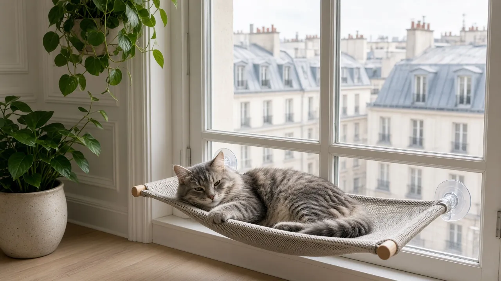
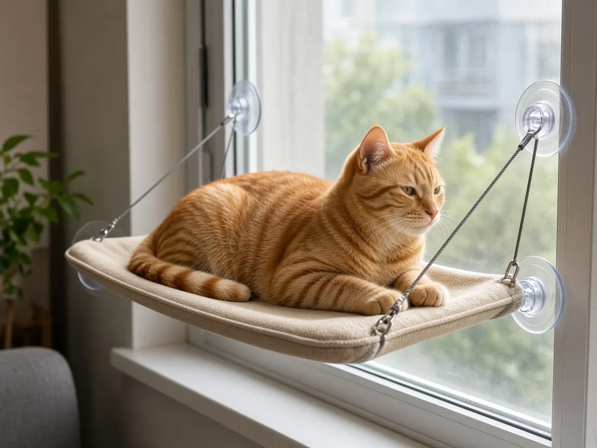
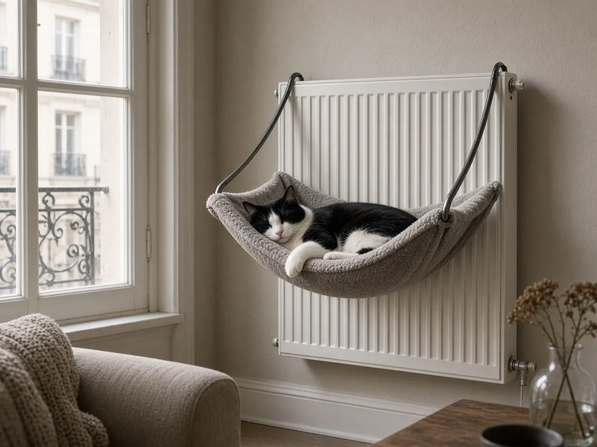
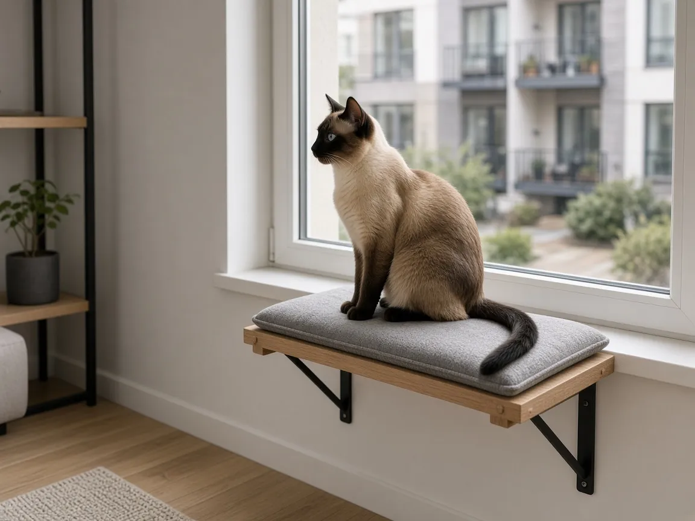

Hamac de fenêtre pour chat : lequel choisir en appartement ?

En appartement, la fenêtre est souvent la meilleure télé de ton chat : oiseaux, passants, pigeons sur le toit d’en face. Lui offrir un vrai poste d’observation, c’est lui donner un coin à lui, en hauteur, au soleil, sans qu’il escalade la bibliothèque ou les rideaux. Hamac de fenêtre à ventouses, hamac de radiateur ou tablette murale : voici comment choisir selon ton logement, et comment l’installer en toute sécurité.
Pourquoi un poste d’observation aide un chat d’appartement
Un chat qui vit en intérieur a besoin de hauteur et de stimulation. Regarder dehors l’occupe, l’aide à passer le temps quand tu n’es pas là et lui offre un endroit calme pour faire la sieste au soleil. Dans un petit logement, un hamac ou une tablette ajoute une surface en hauteur sans prendre de place au sol, en complément d’un arbre à chat ou d’un griffoir.
Comment bien choisir
- Le poids maximal : choisis un modèle prévu pour nettement plus que le poids de ton chat, surtout s’il saute dessus avec élan.
- Le support : vitre lisse pour les ventouses, radiateur à eau pour le hamac de radiateur, mur ou rebord solide pour une tablette.
- La taille du couchage : ton chat doit pouvoir s’allonger complètement. Un grand chat a besoin d’un couchage large.
- Le tissu : une housse amovible et lavable est indispensable avec les poils. La polaire est douce en hiver, la toile respirante plus agréable en été.
- L’accès : prévois une chaise, un meuble ou une étagère à côté si ton chat est âgé ou peu sportif.
- La sécurité de la fenêtre : le hamac se pose sur une vitre fermée ou sécurisée par un filet, jamais sur une fenêtre ouverte sans protection.
1. Le hamac de fenêtre à ventouses

Le plus populaire pour regarder dehors
Le hamac à ventouses se colle directement sur la vitre, à la hauteur que tu veux. Ton chat se retrouve face à l’extérieur, en plein soleil, sans aucun perçage : c’est la solution idéale pour un locataire. Choisis un modèle avec de grosses ventouses, des câbles métalliques plutôt que des sangles et un poids maximal confortable. Pose-le sur une vitre fixe ou un battant que tu gardes fermé, nettoie bien la vitre avant la pose et vérifie l’accroche chaque semaine.
Voir sur Amazon : hamacs de fenêtre à ventouses2. Le hamac de radiateur

Le plus douillet pour l’hiver
Le hamac de radiateur s’accroche sur un radiateur à eau grâce à une armature métallique, souvent réglable en largeur. Ton chat profite d’un couchage tiède, en hauteur, souvent juste sous la fenêtre. Mesure ton radiateur avant de commander et vérifie la profondeur de l’accroche. Réserve-le aux radiateurs à eau classiques, pas aux sèche-serviettes ni aux appareils électriques très chauds, et contrôle que le tissu reste simplement tiède.
Voir sur Amazon : hamacs de radiateur3. La tablette de fenêtre murale

La plus stable pour les grands chats
La tablette murale, avec un coussin, prolonge le rebord de fenêtre quand il est trop étroit pour que ton chat s’y installe. Elle est très stable et convient bien aux chats lourds ou âgés, qui n’aiment pas les surfaces qui bougent. Elle se fixe en général au mur avec des équerres : vérifie que ton bail et ton mur le permettent, ou choisis un modèle qui se pose sur le rebord sans perçage. Un coussin déhoussable rend l’entretien facile.
Voir sur Amazon : tablettes et perchoirs de fenêtreQuel modèle pour quel appartement ?
| Situation | Solution conseillée | Pourquoi |
|---|---|---|
| Locataire, grande vitre | Hamac à ventouses | Aucun perçage, vue directe dehors |
| Radiateur sous la fenêtre | Hamac de radiateur | Couchage tiède en hiver |
| Chat lourd ou âgé | Tablette murale | Surface stable qui ne bouge pas |
| Rebord de fenêtre étroit | Tablette murale | Agrandit la surface au bon endroit |
| Fenêtre souvent ouverte | Filet ou moustiquaire d’abord | Éviter tout risque de chute |
Nos conseils d’installation
- Teste la tenue : appuie fortement avec la main avant de laisser ton chat monter dessus.
- Prévois une marche : un meuble bas ou une chaise à proximité évite les sauts trop hauts.
- Garde un œil sur la chaleur : en plein été, une vitre exposée plein sud peut devenir très chaude, laisse toujours de l’ombre accessible.
- Lave la housse régulièrement, les poils s’y accumulent vite.
- Combine le poste d’observation avec un griffoir ou un arbre à chat pour enrichir son territoire en hauteur.
Quel budget prévoir ?
Le hamac de radiateur est en général l’option la plus abordable. Le hamac à ventouses se situe dans une gamme proche, un peu plus cher pour les modèles renforcés. La tablette murale avec coussin demande souvent un budget un peu plus élevé, selon la matière. Les prix changent souvent, vérifie-les sur la page du vendeur.
FAQ
Un hamac à ventouses est-il vraiment solide ?
Un bon modèle tient bien sur une vitre propre et lisse, mais la tenue dépend de la pose. Nettoie la vitre et les ventouses, humidifie légèrement les ventouses, appuie fort et respecte le poids maximal indiqué par le fabricant. Vérifie l’accroche régulièrement, surtout quand il fait froid ou que la vitre a de la condensation.
Mon chat peut-il tomber si la fenêtre est ouverte ?
Oui, c’est le vrai risque. Ne pose jamais un hamac sur une fenêtre que tu ouvres sans protection : un chat peut sauter ou glisser dehors. Installe-le sur une vitre fixe ou un battant que tu gardes fermé, ou sécurise l’ouverture avec un filet ou une moustiquaire renforcée adaptée aux chats.
Un hamac de radiateur est-il sans danger ?
Il est conçu pour être accroché sur un radiateur à eau classique et reste en général tiède. Évite les radiateurs électriques très chauds en surface, les sèche-serviettes et les convecteurs à grille. Vérifie que ton chat peut en sortir facilement et touche le tissu de temps en temps pour t’assurer qu’il ne chauffe pas trop.
Comment habituer mon chat à son nouveau hamac ?
Place-le à un endroit qu’il aime déjà, près de son coin fenêtre habituel. Mets dessus une couverture qui porte son odeur, quelques croquettes ou un peu d’herbe à chat, et laisse-le découvrir seul. Certains chats l’adoptent en quelques minutes, d’autres en plusieurs jours : ne le force pas.
Que choisir si je suis locataire et que je ne veux pas percer ?
Le hamac à ventouses ou le hamac de radiateur s’installent sans perçage. Pour une tablette murale, il existe des modèles qui se posent sur le rebord de fenêtre ou se fixent avec un système à serrage, à choisir solides et stables pour le poids de ton chat.
Notre avis
Pour la plupart des appartements, le hamac de fenêtre à ventouses est le meilleur choix : sans perçage, il offre à ton chat une vue directe sur l’extérieur. Si ton radiateur est sous la fenêtre, le hamac de radiateur devient le coin préféré de l’hiver. Pour un grand chat ou un chat âgé, la tablette murale reste la plus stable. Dans tous les cas, sécurise la fenêtre : vois notre guide du filet de protection pour balcon, notre sélection d’arbres à chat pour petit appartement et notre guide du coussin chauffant pour chat.
Liens affiliés Amazon : une commission peut être versée, sans surcoût pour toi.